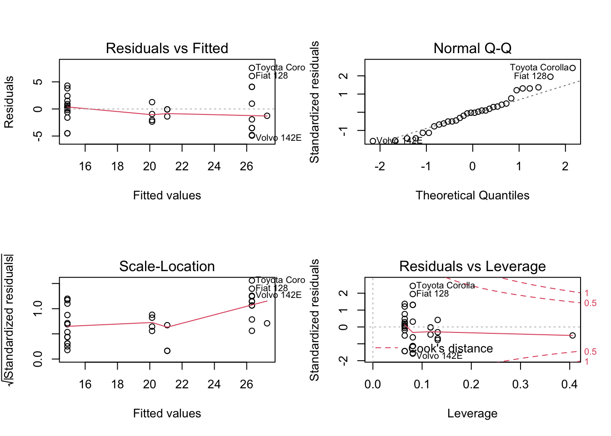

R-面向对象编程（一）
王诗翔 · 2018-08-15
内容：
- S3 借助面向对象的编码风格，并加以合理的抽象，我们可以简单地模仿对象的重要特性，于是，问题和模型之间的转换就变得清晰自然。
S3对象
S3对象系统是一个简单且宽松的面向对象系统。每个基本对象的类型都有一个S3类名称。比如integer,numeric, character, logical, list和data.frame都属于S3类。
举例，下面vec1类型是double，意味其内部类型或者说存储模式是双精度浮点型数字。但它的类是numeric。
vec1 = c(1, 2, 3)
typeof(vec1)
#> [1] "double"
class(vec1)
#> [1] "numeric"下面data1类型是list，意味data1的内部类型或者存储模式是列表，但它的S3类是data.frame。
data1 = data.frame(x = 1:3, y = rnorm(3))
typeof(data1)
#> [1] "list"
class(data1)
#> [1] "data.frame"理解对象的内部类型与S3类区别是一个重点。
一个类可以用多种方法定义它的行为，尤其是它与其他类的关系。在S3系统中，我们可以创建泛型函数（generic function），对于不同的类，由泛型函数决定调用哪个方法，这就是S3方法分派（method dispatch）的工作机理。
对象的类不同，其方法分派不同，因此，区别对象的类十分重要。
R中有许多基于某个通用目的定义的S3泛型函数，我们先看看head()与tail()。head()展示一个数据对象的前n条记录，tail()展示后n条。这跟x[1:n]是不同的，因为对不同的类的对象，记录的定义是不同的。对原子向量（数值、字符向量等），前n条记录指前n个元素。但对于数据框，前n条记录指前n行而不是前n列。
查看下head的函数内部信息：
head
#> function (x, ...)
#> UseMethod("head")
#> <bytecode: 0x7fc967b330c8>
#> <environment: namespace:utils>我们发现函数中并没有实际的操作细节。它调用UseMethod("head")来让泛型函数head()执行方法分派，也就是说，对于不同的类，它可能有不同的执行方式（过程）。
num_vec = c(1, 2, 3, 4, 5)
data_frame = data.frame(x = 1:5, y = rnorm(5))调用函数：
head(num_vec, 3)
#> [1] 1 2 3
head(data_frame, 3)
#> x y
#> 1 1 0.589
#> 2 2 0.663
#> 3 3 -0.887我们可以使用methods()查看head()函数可以实现的所有方法：
methods("head")
#> [1] head.array* head.data.frame* head.default* head.ftable*
#> [5] head.function* head.matrix
#> see '?methods' for accessing help and source code可以看到head不仅仅适用于向量和数据框。
注意，方法都是以method.class形式表示，如果我们输入一个data.frame，head()会调用head.data.frame方法。当没有方法可以匹配对象的类时，函数会自动转向method.default方法。这就是方法分派的一个实际过程。
内置类和方法
S3泛型函数和方法在统一各个模型的使用方式上是最有用的。比如我们可以创建一个线性模型，以不同角度查看模型信息：
lm1 = lm(mpg ~ cyl + vs, data = mtcars)线性模型本质上是由模型拟合产生的数据字段构成的列表，所以lm1的类型是list，但是它的类是lm，因此泛型函数根据lm选择方法：
typeof(lm1)
#> [1] "list"
class(lm1)
#> [1] "lm"甚至没有明确调用S3泛型函数时，S3方法分派也会自动进行。如果我们输入lm1：
lm1
#>
#> Call:
#> lm(formula = mpg ~ cyl + vs, data = mtcars)
#>
#> Coefficients:
#> (Intercept) cyl vs
#> 39.625 -3.091 -0.939实际上，print()函数被默默地调用了：
print(lm1)
#>
#> Call:
#> lm(formula = mpg ~ cyl + vs, data = mtcars)
#>
#> Coefficients:
#> (Intercept) cyl vs
#> 39.625 -3.091 -0.939为什么打印出来的不像列表呢？因为print()是一个泛型函数，它为lm选择了一个方法来打印线性模型最重要的信息。我们可以调用getS3method("print", "lm")获取实际使用的方法与想象的进行验证：
identical(getS3method("print", "lm"), stats:::print.lm)
#> [1] TRUEprint()展示模型的一个简要版本，summary()展示更详细的信息。summary()也是一个泛型函数，它为模型的所有类提供了许多方法：
summary(lm1)
#>
#> Call:
#> lm(formula = mpg ~ cyl + vs, data = mtcars)
#>
#> Residuals:
#> Min 1Q Median 3Q Max
#> -4.923 -1.953 -0.081 1.319 7.577
#>
#> Coefficients:
#> Estimate Std. Error t value Pr(>|t|)
#> (Intercept) 39.625 4.225 9.38 2.8e-10 ***
#> cyl -3.091 0.558 -5.54 5.7e-06 ***
#> vs -0.939 1.978 -0.47 0.64
#> ---
#> Signif. codes: 0 '***' 0.001 '**' 0.01 '*' 0.05 '.' 0.1 ' ' 1
#>
#> Residual standard error: 3.25 on 29 degrees of freedom
#> Multiple R-squared: 0.728, Adjusted R-squared: 0.71
#> F-statistic: 38.9 on 2 and 29 DF, p-value: 6.23e-09实际上，summary()的输出结果也是一个对象，包含的数据都可以被访问。在这个例子里，这个对象是一个列表，是summary.lm类，它有可供print()选择的自己的方法：
lm1summary = summary(lm1)
typeof(lm1summary)
#> [1] "list"
class(lm1summary)
#> [1] "summary.lm"查看列表成分：
names(lm1summary)
#> [1] "call" "terms" "residuals" "coefficients"
#> [5] "aliased" "sigma" "df" "r.squared"
#> [9] "adj.r.squared" "fstatistic" "cov.unscaled"还有一些其他有用的且与模型相关的泛型函数，例如plot(),predict()。不同的内置模型和第三方扩展包提供的模型都能实现这些泛型函数。
举例，我们可以对线性模型调用plot()函数：
oldpar = par(mfrow = c(2, 2))
plot(lm1)
par(oldpar)为避免依次生成这4个图，我们用par()将绘图区域划分为2x2的子区域。
利用predict()我们可以使用模型对新数据进行预测，泛型函数predict()自动选择正确的方法用新数据进行预测：
predict(lm1, data.frame(cyl = c(6, 8), vs = c(1, 1)))
#> 1 2
#> 20.1 14.0这个函数既可以用在样本内，又可以用在样本外。如果我们为模型提供新数据，它就进行样本外预测。
下面我们创建一幅真实值和拟合值的散点图，看一看线性模型的预测效果：
plot(mtcars$mpg, fitted(lm1))这里的fitted()也是泛型函数，等价于lm1$fitted.values，拟合值等于用原始数据得到的预测值，即用原始数据构建的模型预测原始数据，predict(lm1, mtcars)。
真实值与拟合值的差称为残差，可以通过另一个泛型函数residuals()获得。
plot(density(residuals(lm1)),
main = "Density of lm1 residuals")这些泛型函数不仅适用于lm、glm和其他内置模型，也适用于其他扩展包提供的模型。
例如我们使用rpart包，使用前面的数据和公式拟合一个回归树模型。
if(!require("rpart")) install.packages("rpart")
#> Loading required package: rpart
library(rpart)tree_model = rpart(mpg ~ cyl + vs, data = mtcars)我们之所以能够使用相同的方法，是因为这个包的作者希望函数调用的方式与调用R内置函数保持一致。
typeof(tree_model)
#> [1] "list"
class(tree_model)
#> [1] "rpart"打印模型：
print(tree_model)
#> n= 32
#>
#> node), split, n, deviance, yval
#> * denotes terminal node
#>
#> 1) root 32 1130.0 20.1
#> 2) cyl>=5 21 198.0 16.6
#> 4) cyl>=7 14 85.2 15.1 *
#> 5) cyl< 7 7 12.7 19.7 *
#> 3) cyl< 5 11 203.0 26.7 *更详细信息：
summary(tree_model)
#> Call:
#> rpart(formula = mpg ~ cyl + vs, data = mtcars)
#> n= 32
#>
#> CP nsplit rel error xerror xstd
#> 1 0.6431 0 1.000 1.079 0.2519
#> 2 0.0893 1 0.357 0.401 0.0766
#> 3 0.0100 2 0.268 0.401 0.0766
#>
#> Variable importance
#> cyl vs
#> 65 35
#>
#> Node number 1: 32 observations, complexity param=0.643
#> mean=20.1, MSE=35.2
#> left son=2 (21 obs) right son=3 (11 obs)
#> Primary splits:
#> cyl < 5 to the right, improve=0.643, (0 missing)
#> vs < 0.5 to the left, improve=0.441, (0 missing)
#> Surrogate splits:
#> vs < 0.5 to the left, agree=0.844, adj=0.545, (0 split)
#>
#> Node number 2: 21 observations, complexity param=0.0893
#> mean=16.6, MSE=9.45
#> left son=4 (14 obs) right son=5 (7 obs)
#> Primary splits:
#> cyl < 7 to the right, improve=0.507, (0 missing)
#> Surrogate splits:
#> vs < 0.5 to the left, agree=0.857, adj=0.571, (0 split)
#>
#> Node number 3: 11 observations
#> mean=26.7, MSE=18.5
#>
#> Node number 4: 14 observations
#> mean=15.1, MSE=6.09
#>
#> Node number 5: 7 observations
#> mean=19.7, MSE=1.81下面对结果进行可视化，得到树图：
oldpar = par(xpd = NA)
plot(tree_model)
text(tree_model, use.n = TRUE)par(oldpar)为现有类定义泛型函数
在定义泛型函数时，我们创建一个函数去调用UseMethod()出发方法分派。然后对泛型函数想要作用的类创建带有method.class形式的方法函数，同时还要创建带有method.default形式的默认方法来应对所有其他情况。
下面我们创建一个新的泛型函数generic_head()，它有两个参数：输入对象x和需要提取的记录条数n。泛型函数仅仅调用UseMethod("generic_head")来让R根据输入对象x的类执行方法分派。
generic_head = function(x, n)
UseMethod("generic_head")对原子向量提取前n个元素，因此分别定义generic_head.numeric、generic_head.character等，另外最好定义一个默认方法捕获不能匹配的其他所有情况：
generic_head.default = function(x, n){
x[1:n]
}现在generic_head只有一种方法，等于没有使用泛型函数：
generic_head(num_vec, 3)
#> [1] 1 2 3现在我们还没有定义针对data.frame类的方法，所以当我们输入数据框时，函数会自动转向generic_head.default，又因为提取的数量超出列数，所以下面的运行会报错：
generic_head(data_frame, 3)
#> Error in `[.data.frame`(x, 1:n): undefined columns selected下面为data.frame定义方法：
generic_head.data.frame = function(x, n) {
x[1:n, ]
}现在函数就可以正常运行了：
generic_head(data_frame, 3)
#> x y
#> 1 1 0.589
#> 2 2 0.663
#> 3 3 -0.887因为没有对参数进行检查，所以S3类执行的方法并不稳健。
定义新类并创建对象
现在我们来尝试构建新类，class(x)获取x的类，而class(x) = some_class将x的类设为some_class。
使用列表作为底层数据结构
列表可能是创建新类时使用最广泛的数据结构，类描述了对象的类型和对象交互作用的方法，其中对象用于存储多种多样、长度不一的数据。
下面我们定义一个叫product的函数，创建一个由name、price和inventory构成的列表，该列表的类是product。我们还将自己定义它的print方法。
productor = function(name, price, inventory){
obj = list(name = name,
price = price,
inventory = inventory)
class(obj) = "product"
obj
}上面我们创建了一个列表，然后将它的类替换为product。我们还可以使用structure()：
product = function(name, price, inventory){
structure(list(name = name,
price = price,
inventory = inventory),
class = "product")
}现在我们调用product()函数生成product类的实例：
laptop = product("Laptop", 499, 300)查看它的结构和S3类方法分派：
typeof(laptop)
#> [1] "list"
class(laptop)
#> [1] "product"此时我们还没有为该类定义任何方法，如果print将按默认列表输出：
print(laptop)
#> $name
#> [1] "Laptop"
#>
#> $price
#> [1] 499
#>
#> $inventory
#> [1] 300
#>
#> attr(,"class")
#> [1] "product"下面我们自定义一个print方法，使得输出更紧凑：
print.product = function(x, ...){
cat("<product>\n")
cat("name:", x$name, "\n")
cat("price:", x$price, "\n")
cat("inventory:", x$inventory, "\n")
invisible(x)
}print方法返回输入对象本身以备后用，这是一项约定。
现在我们再来看看输出：
laptop
#> <product>
#> name: Laptop
#> price: 499
#> inventory: 300我们可以像操作列表一样访问laptop的成分：
laptop$name
#> [1] "Laptop"
laptop$price
#> [1] 499
laptop$inventory
#> [1] 300如果我们创建另一个对象，并将两者放入一个列表然后打印，print.product仍然会被调用：
cellphone = product("Phone", 249, 12000)
products = list(laptop, cellphone)
products
#> [[1]]
#> <product>
#> name: Laptop
#> price: 499
#> inventory: 300
#>
#> [[2]]
#> <product>
#> name: Phone
#> price: 249
#> inventory: 12000当products以列表形式被打印时，会对每个元素调用print()泛型函数，再由泛型函数执行方法分派。
大多数其他编程语言都对类有正式的定义，而S3没有，所以创建一个S3对象比较简单，但我们需要对输入参数进行充分的检查，以确保创建的对象与所属类内部一致。
除了定义新类，我们还可以定义新的泛型函数。下面创建一个叫value的泛型函数，它通过测量产品的库存值来为product调用实施方法：
value = function(x, ...)
UseMethod("value")
value.default = function(x, ...){
stop("Value is undefined")
}
value.product = function(x, ...){
x$price * x$inventory
}针对其他类，value调用default方法并终止运行。
value(laptop)
#> [1] 149700
value(cellphone)
#> [1] 2988000
value(data_frame)
#> Error in value.default(data_frame): Value is undefined使用原子向量作为底层数据结构
上面我们已经演示了创建S3类和泛型函数的过程，有时候我们需要使用原子向量创建新类，下面展示百分比形式向量创建过程。
首先定义一个percent函数，它检查输入是否是数值向量并将输入对象类型改为percent，percent类继承numeric类：
percent = function(x){
stopifnot(is.numeric(x))
class(x) = c("percent", "numeric")
x
}这里的继承指方法分派首先在percent类中方法找，找不到就去numeric类方法中找。寻找的顺序由类名称的顺序决定。
pct = percent(c(0.1, 0.05, 0.25))
pct
#> [1] 0.10 0.05 0.25
#> attr(,"class")
#> [1] "percent" "numeric"现在定义方法，让percent类以百分比形式存在：
as.character.percent = function(x, ...){
paste0(as.numeric(x) * 100, "%")
}现在我们可以得到字符型了：
as.character(pct)
#> [1] "10%" "5%" "25%"也可以直接调用as.character()为percent提供一个format方法：
format.percent = function(x, ...){
as.character(x, ...)
}format现在有相同的效果：
format(pct)
#> [1] "10%" "5%" "25%"类似地，我们调用format.percent()为percent提供print方法：
print.percent = function(x, ...){
print(format.percent(x), quote = FALSE)
}这里指定quote=FALSE使得打印的格式化字符串更像数字而非字符串。
pct
#> [1] 10% 5% 25%注意，使用算术运算符操作后会自动保持输出向量类不变：
pct + 0.2
#> [1] 30% 25% 45%
pct * 0.5
#> [1] 5% 2.5% 12.5%可惜使用其他函数可能不会保持输入对象的类，比如sum()、mean()等：
sum(pct)
#> [1] 0.4
mean(pct)
#> [1] 0.133
max(pct)
#> [1] 0.25
min(pct)
#> [1] 0.05为了确保百分比形式保存，我们对percent类实施一些操作：
sum.percent = function(...){
percent(NextMethod("sum"))
}
mean.percent = function(x, ...){
percent(NextMethod("mean"))
}
max.percent = function(...){
percent(NextMethod("max"))
}
min.percent = function(...){
percent(NextMethod("max"))
}NextMethod("sum")对numeric类调用sum()函数，然后再调用percent()函数将输出的数值向量包装为百分比形式：
sum(pct)
#> [1] 40%
mean(pct)
#> [1] 13.3333333333333%
max(pct)
#> [1] 25%
min(pct)
#> [1] 5%但如果我们组合一个百分比向量和其他数值型的值，percent类又会消失掉，我们进行相同的改进：
c.percent = function(x, ...){
percent(NextMethod("c"))
}c(pct, 0.12)
#> [1] 10% 5% 25% 12%dan….我们取子集又会有问题
pct[1:3]
#> [1] 0.10 0.05 0.25
pct[[2]]
#> [1] 0.05同样地，我们对[和[[函数进行改造：
`[.percent` = function(x, i) {
percent(NextMethod('['))
}
`[[.percent` = function(x, i){
percent(NextMethod("[["))
}此时显示就正常了：
pct[1:3]
#> [1] 10% 5% 25%
pct[[2]]
#> [1] 5%实现这些方法后，我们可以在数据框中使用：
data.frame(id = 1:3, pct)
#> id pct
#> 1 1 10%
#> 2 2 5%
#> 3 3 25%S3继承
假设我们想要对一些交通工具，例如汽车、公共汽车和飞机进行建模。这些交通工具有一些共性，它们都有名称、速度、位置，而且都可以移动。为了形象化描述它们，我们定义一个基本类，称为vehichle，用于存储公共部分，另外定义car、bus和airplane这3个子类，它们继承vehichle，但具有自定义的行为。
首先，定义一个函数来创建vehicle对象，它本质上是一个环境。我们选择环境而不是列表，因为需要用到环境的引用语义，也就是说，我们传递一个对象，然后原地修改它，而不会创建这个对象的副本。因此无论什么位置将对象传递给函数，对象总是指向同一个交通工具。
Vehicle = function(class, name, speed) {
obj = new.env(parent = emptyenv())
obj$name = name
obj$speed = speed
obj$position = c(0, 0, 0)
class(obj) = c(class, "vehicle")
obj
}这里的class(obj) = c(class, "vehicle")似乎有点语义不明。但前者是基础函数，后者是输入参数，R能够判断好。
下面函数创建继承vehicle的car、bus和airplane的特定函数：
Car = function(...){
Vehicle(class = "car", ...)
}
Bus = function(...){
Vehicle(class = "bus", ...)
}
Airplane = function(...){
Vehicle(class = "airplane", ...)
}现在我们可以为每一个子类创建实例：
car = Car("Model-A", 80)
bus = Bus("Medium-Bus", 40)
airplane = Airplane("Big-Plane", 800)下面为vehicle提供通用的print方法：
print.vehicle = function(x, ...){
cat(sprintf("<vehicle: %s>\n", class(x)[1]))
cat("name:", x$name, "\n")
cat("speed:", x$speed, "km/h\n")
cat("position:", paste(x$position, collapse = ", "), "\n")
}因为我们定义的3个子类都有了继承，所以print方法通用：
car
#> <vehicle: car>
#> name: Model-A
#> speed: 80 km/h
#> position: 0, 0, 0
bus
#> <vehicle: bus>
#> name: Medium-Bus
#> speed: 40 km/h
#> position: 0, 0, 0
airplane
#> <vehicle: airplane>
#> name: Big-Plane
#> speed: 800 km/h
#> position: 0, 0, 0因为交通工具可以移动，我们创建一个泛型函数move来表征这样的状态：
move = function(vehicle, x, y, z) {
UseMethod("move")
}
move.vehicle = function(vehicle, movement) {
if (length(movement) != 3){
stop("All three dimensions must be specified to move a vehicle")
}
vehicle$position = vehicle$position + movement
vehicle
}这里我们将汽车和公共汽车的移动限定在二维平面上。
move.bus = move.car = function(vehicle, movement) {
if (length(movement) != 2){
stop("This vehicle only supports 2d movement")
}
movement = c(movement, 0)
NextMethod("move")
}这里我们将movement的第3个纬度强制转换为0，然后调用NextMethod("move")来调用move.vehicle()。
飞机既可以在2维也可以在3维：
move.airplane = function(vehicle, movement) {
if (length(movement) == 2){
movement = c(movement, 0)
}
NextMethod("move")
}下载3种方法都实现了，进行测试。
move(car, c(1, 2, 3))
#> Error in move.car(car, c(1, 2, 3)): This vehicle only supports 2d movement只能输入二维，所以提示报错了。
move(car, c(1, 2))
#> <vehicle: car>
#> name: Model-A
#> speed: 80 km/h
#> position: 1, 2, 0move(airplane, c(1, 2))
#> <vehicle: airplane>
#> name: Big-Plane
#> speed: 800 km/h
#> position: 1, 2, 0飞机，3维：
move(airplane, c(20,100,50))
#> <vehicle: airplane>
#> name: Big-Plane
#> speed: 800 km/h
#> position: 21, 102, 50注意，airplane的位置是累积的。因为前面说过，它本质是一个环境，因此修改move.vehicle()中的position不会创建一个副本再修改，而是本地修改！
学习自《R语言编程指南》